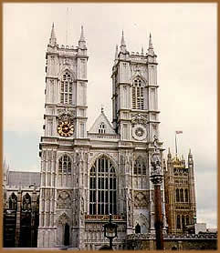
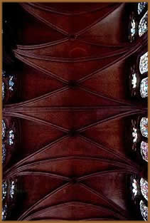

Na arquitetura, o estilo gótico
é caracterizado pelo arco de ogiva. Este estilo surgiu
na França nos fins do século XII e expandiu-se pela
Europa Ocidental, mantendo-se até a Renascença,
ou
seja, até o século XIV, na Itália, e até
o século XVI ao norte dos Alpes. Moore definiu a arquitetura
gótica como um "sistema de abóbadas, cuja
estabilidade era assegurada por um equilíbrio perfeito
de forças". Esta interessante definição
é infelizmente incompleta, pois nem sequer cita os arcos
de ogiva. Mas a verdade é que, se este elemento é
fundamen- tal no estilo gótico, aparece também noutros
estilos, assim como o arco de volta inteira surge igualmente nos
edifícios góticos. Durante o período românico,
o arco de ogiva apare- ce principalmente nos lugares onde existe
forte influência sarracena. Os arquitetos da catedral românica
de Monreale, utilizaram-no freqüentemente. O românico
espanhol, e até mesmo o provençal, empregaram o
arco de ogiva. Por outro lado, num edifício tão
gótico quanto a catedral de Chartres, as janelas da clarabóia
da nave são de volta inteira, salvo nas suas subdivisões,
assim como os arcos diagonais da Notre-Dame de Paris. O arco de
ogiva, então, não é tão característico
do gótico como geralmente se pensa.
A definição de Moore não menciona
as paredes, mas somente os três elementos principais da
construção. No gótico francês, uma
vez chegado o seu máximo esplendor, a parede deixou de
ser com efeito, elemento da estrutura. O edifício é
uma gaiola de vidro e de pedra com as janelas que vão de
um pilar a outro. Se a parede existe ainda, por exemplo, sob as
janelas das naves laterais, é somente como defesa contra
as intempéries. Tudo se passa como se as paredes românicas
tivessem sido cortadas em secções e cada secção
houvesse girado sobre si própria num ângulo reto
para o exterior, de modo a formar contra-fortes.
No seu início o gótico francês
baseava-se nos elementos estruturais definidos por Moore, porém
essa definição só se aplicaria à elaboração
do gótico francês não abrangendo a arquitetura
gótica de outros países ou as fases ulteriores deste
estilo na França.
A abóbada
Dentre
os elementos da arquitetura gótica este seria o mais importante.
Os arquitetos góticos introduziram duas inovações
fundamentais na construção de abóbadas. Em
primeiro lugar para os arcos dobrados e os arcos dianteiros terem
a mesma dimensão que os arcos cruzeiros, adotaram o arco
de ogiva. O cruzamento das ogivas permite obter abóbadas
com arcos da mesma altura. Numa abóbada que cubra um espaço
retangular, a ogiva dos arcos formeiros tem de ser muito pronunciada.
Por outro lado, os construtores góticos tentaram concentrar
a pressão das abóbadas ao longo de uma linha única,
em frente de cada pilar, no exterior do edifício. Os arcos
góticos alteiam os arcos formeiros: em vez de os iniciar
ao mesmo nível que os arcos diagonais, inserem um colunelo
que permite colocar o nascimento dos arcos formeiros em nível
superior ao dos outros. Assim, as janelas da clarabóia
tornam-se mais importantes e, desse modo, não há
mais a necessidade de ser acentuar a ogiva do arco formeiro para
obter uma abóbada de flechas iguais. Finalmente, a zona
coberta pela abóbada na parede exterior reduz-se a uma
linha em vez de se limitar a um triângulo. A nave da Catedral
de Amiens oferece um exemplo claro deste sistema.
Suporte
Uma vez que a arquitetura gótica se desenvolveu
a partir da românica, podemos encontrar um colunelo para
cada nervura da abóbada, o que efetivamente acontece sobre
os capitéis da arcada da nave. Como as proporções
do edifício se tornaram mais leves, os fustes são
mais esguios do que na arte românica e sublinham o movimento
ascendente do conjunto. Quanto ao pilar propriamente dito, o caso
é diferente. O pilar composto românico, por mais
lógico que seja, é relativamente espesso; define
o espaço da nave central e a separa das laterais. As diferentes
partes da igreja são desde então concebidas como
unidades separadas. O gótico parece primeiramente retroceder.
O pilar composto é substituído por uma coluna lisa
e redonda cuja massa, menos volumosa, facilita a passagem entre
a nave central e as laterais, criando um espaço único.
Para que se torne possível utilizar colunas lisas, os suportes
aparentes dos arcos da abóbada devem terminar ao nível
dos capitéis, o que embora seja arquitetonicamente possível,
é pouco estético. Com efeito, as verticais rígidas
dos colunelos parecem interromper-se muito bruscamente.
Entretanto, o desejo de se construir catedrais
cada vez mais altas, leva a um grande aprimoramento técnico.
Exemplo disso são os fortíssimos pilares de Chartres,
nos elegantes fustes de Amiens, testemunho de uma experiência
mais avançada em termos de arquitetura.
A habilidade técnica em constante progresso
dos construtores dos séculos XIV e XV, permitiu recorrer
novamente ao pilar composto, cujos elementos serão tão
finos e tão delicados, que parece desafiar as leis da gravidade.
Contraforte
É o terceiro e último elemento estrutural
do gótico. As paredes góticas ao contrário
das românicas são finas ou inexistentes, sendo o
contraforte tipicamente gótico composto de duas partes.
A primeira, o contraforte propriamente dito, inspira-se
no contraforte românico e está colocado em ângulo
reto em relação a igreja, contra a parede lateral,
e, eleva-se muito altamente, num enorme grau de perfeição.
O peso deste elemento neutraliza a pressão das abóbadas.
O segundo elemento, ou arcobotante, é especificamente
gótico. O arcobotante tem uma caixilharia diagonal de pedra;
está escorado de um lado pelo contraforte, colocado a certa
distância da parede, e por outro lado pela clarabóia
da nave. O arcobotante dirige a pressão da abóbada
para o exterior por cima da cobertura da nave central. Como é
cimbrado por baixo, exerce um pouco de pressão sobre o
vão; sozinho não poderia resistir à pressão
lateral das abóbadas, mas associado aos contrafortes, tem
uma força enorme.
Foi graças a esse elemento que o gótico
ousou construir naves tão altas e tão claras. Assim,
a catedral gótica eleva-se para o céu como uma oração
e, tal como a filosofia medieval, exprime o intangível
e transcende o homem, na sua procura do além.
Texto original
de Beatrix Algrave
Extraído
e adaptado de www.beatrix.pro.br